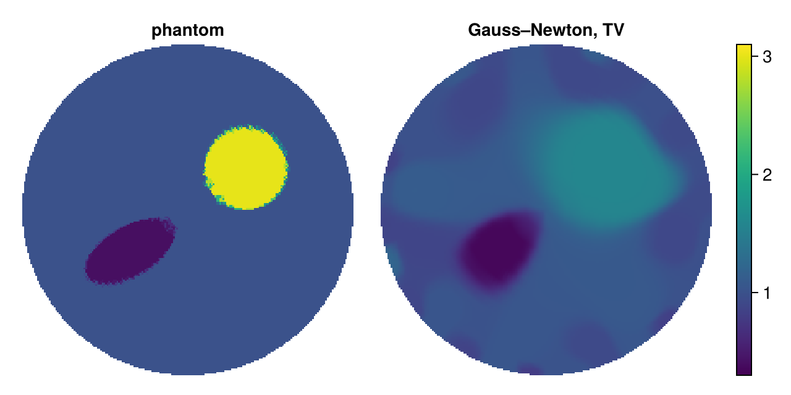
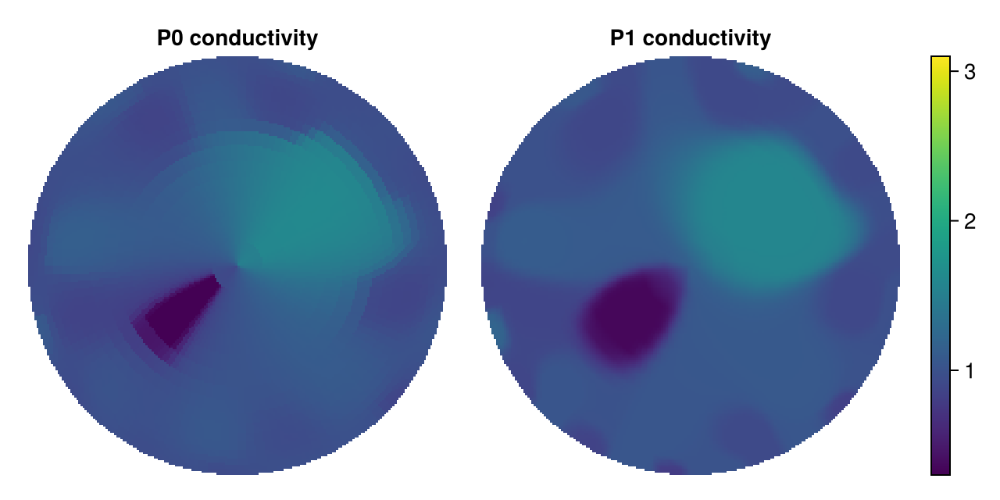

Reconstructing a conductivity
This tutorial reconstructs two inclusions in a disk from noisy measurements of the complete electrode model:
- set up a mesh, electrodes and a forward model;
- simulate noisy data on a finer mesh, so that the reconstruction does not commit the inverse crime;
- reconstruct by Gauss–Newton with total variation regularization.
The background of every step is in the theory wiki; the overview Anatomy of an EIT Reconstruction puts them together.
This page is generated from examples/reconstruction.jl and is also available as a Jupyter notebook. Besides ModularEIT it uses Ferrite.jl and CairoMakie.jl for the plots.
using ModularEIT, Ferrite, Random, LinearAlgebra
using CairoMakieMesh, electrodes and forward model
A polar mesh of the unit disk: a centre node and rings of nodes, graded towards the boundary, where the measurements are most sensitive. The potential is piecewise linear; the conductivity is piecewise linear as well (see the comparison at the end). Sixteen electrodes cover half of the boundary; with 128 = 8 × 16 nodes per ring the electrode edges lie on nodes.
grid = polar_grid(16, 128; boundary_spacing = 1 / 40)
disc = FerriteDiscretization(grid; ip_σ = Lagrange{RefTriangle, 1}())
electrodes = angular_electrodes(disc, 16; coverage = 0.5)
fm = ForwardModel(disc, CompleteElectrodeModel(electrodes, 0.05))
(ndofs_u(disc), ndofs_σ(disc))(2049, 2049)The unknown conductivity
Phantoms are functions of the position, independent of any mesh: here a conductive and a resistive inclusion in a background of conductivity 1.
phantom = InclusionPhantom(1.0, [CircleInclusion((0.35, 0.25), 0.25, 3.0),
EllipseInclusion((-0.35, -0.25), (0.3, 0.15), π / 6, 0.4)])InclusionPhantom{AbstractInclusion}(1.0, AbstractInclusion[CircleInclusion((0.35, 0.25), 0.25, 3.0), EllipseInclusion((-0.35, -0.25), (0.3, 0.15), 0.5235987755982988, 0.4)])A small helper that rasterises a conductivity on a mesh with to_image and plots it:
function show_conductivity!(pos, disc, σ, title)
img = to_image(disc, σ, 200, 200) # row 1 at the top, NaN outside
ax = Axis(pos; title, aspect = DataAspect())
hidedecorations!(ax)
hidespines!(ax)
xs = range(-1, 1; length = 200)
return heatmap!(ax, xs, xs, permutedims(reverse(img; dims = 1));
colormap = :viridis, colorrange = (0.3, 3.1), nan_color = :transparent)
endshow_conductivity! (generic function with 1 method)Simulated measurements
The data are computed on a finer mesh with the same physical electrodes (transfer_electrodes), with trigonometric current patterns and 1 % relative Gaussian noise (simulate_data). The reconstruction only gets the nominal currents and the noisy voltages.
fine = FerriteDiscretization(polar_grid(32, 256; boundary_spacing = 1 / 80))
fm_fine = ForwardModel(fine, CompleteElectrodeModel(transfer_electrodes(disc, electrodes, fine), 0.05))
currents = trigonometric_patterns(fm, 7) # 14 patterns
noise = RelativeGaussianNoise(0.01)
sim = simulate_data(fine, fm_fine, phantom, currents; noise, rng = MersenneTwister(1))
size(sim.data) # 16 electrode voltages × 14 patterns(16, 14)Objective and linear solver
The least-squares misfit gets its gradient and Jacobian from the adjoint state method. Its linear systems are solved by block CG, preconditioned with the FFT solver of the polar mesh (PolarPreconditioner), which is exact for constant conductivity.
solver = BlockCGSolver(preconditioner = PolarPreconditioner(disc))
data = AdjointStateObjective(fm, currents, sim.data; solver)
σ0 = ones(ndofs_σ(disc))
(objective_value(data, σ0), discrepancy_target(data, noise))(0.24817528306376918, 0.01361340625037164)The second number is the misfit that the noise alone causes (times $τ^2 = 1.21$). Fitting the data better than that would fit the noise, so it serves as the stopping criterion (discrepancy principle).
Gauss–Newton with total variation
Total variation favours piecewise constant conductivities with sharp edges. Smoothed with $ε = 10^{-2}$ it is differentiable and has a Gauss–Newton Hessian model, so Gauss–Newton (Levenberg–Marquardt) applies. The lower bound keeps the conductivity positive.
obj = RegularizedObjective(data, 1e-3 => TotalVariationRegularizer(disc; ε = 1e-2))
res = minimize(obj, σ0, GaussNewton(); lower = 0.05, maxiter = 30, ftarget = discrepancy_target(data, noise))
(res.status, res.iteration, objective_value(data, res.σ))(:maxiter, 30, 0.012023566089222604)Here the iteration stops at maxiter: with this regularization weight the misfit levels off above the noise level, so the discrepancy principle would ask for a smaller weight. Smaller weights reach it after a few iterations but show more artefacts at the electrodes, where the coarse mesh cannot reproduce the fine mesh's current densities (a modelling error that is larger than the noise, see Noise Models for EIT Data).
Results
The relative L² error with respect to the phantom, interpolated at the nodes of the reconstruction mesh (an L² projection of the discontinuous phantom onto continuous functions would overshoot at the edges):
mats = FEMatrices(disc)
σtrue = conductivity(disc, phantom; method = :interpolate)
relerr(σ) = fe_norm(disc, σ - σtrue; mats) / fe_norm(disc, σtrue; mats)
(initial = relerr(σ0), reconstruction = relerr(res.σ))(initial = 0.4116987649779033, reconstruction = 0.3101214278538376)The phantom is drawn on the fine simulation mesh (cell averages):
fig = Figure(size = (640, 320))
show_conductivity!(fig[1, 1], fine, conductivity(fine, phantom), "phantom")
hm = show_conductivity!(fig[1, 2], disc, res.σ, "Gauss–Newton, TV")
Colorbar(fig[1, 3], hm)
fig
The location and the contrast of both inclusions are recovered, with blurred edges and reduced contrast away from the boundary, where the measurements are least sensitive (see Decay of Boundary Measurements).
Why a continuous conductivity?
With the same number of nodes on every ring, the triangles near the centre are long and thin. A piecewise constant conductivity (the default, P0) then takes one value per thin wedge, which shows up as radial artefacts, and the many small cells under the electrodes absorb the modelling error. The same reconstruction with P0:
disc0 = FerriteDiscretization(grid)
fm0 = ForwardModel(disc0, CompleteElectrodeModel(electrodes, 0.05))
data0 = AdjointStateObjective(fm0, currents, sim.data; solver = BlockCGSolver(preconditioner = PolarPreconditioner(disc0)))
obj0 = RegularizedObjective(data0, 1e-3 => TotalVariationRegularizer(disc0; ε = 1e-2))
res0 = minimize(obj0, ones(ndofs_σ(disc0)), GaussNewton(); lower = 0.05, maxiter = 30,
ftarget = discrepancy_target(data0, noise))
fig0 = Figure(size = (640, 320))
show_conductivity!(fig0[1, 1], disc0, res0.σ, "P0 conductivity")
hm0 = show_conductivity!(fig0[1, 2], disc, res.σ, "P1 conductivity")
Colorbar(fig0[1, 3], hm0)
fig0
Next steps
- Other domains:
ConformalMapandconformal_gridmap the polar mesh to other simply connected domains; the same preconditioner applies withreference = cg.reference. - Pixel images: quadrilateral meshes from
generate_grid,DCTPreconditionerandfrom_image. - Other methods and priors:
LBFGS,ADMMwith exact total variation,TikhonovRegularizer, or a denoiser throughProximalMap.